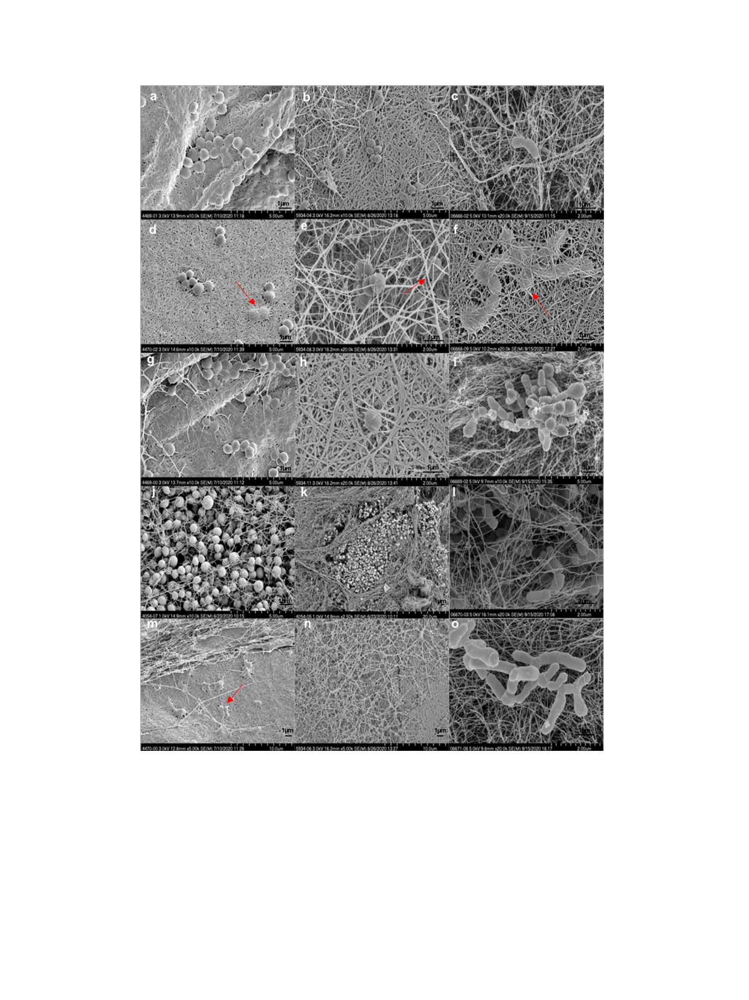

M. Albano, K.E. Greenwood-Quaintance, M.J. Karau et al.
IJC Heart & Vasculature 34 (2021) 100801
Fig. 5. Scanning electron micrographs of Staphylococcus aureus (a, d, g, j, m), Staphylococcus epidermidis (b, e, h, k, n), and Cutibacterium acnes (c, f, i, l, o) biofilms on cellulose
after 24 (S. aureus and S. epidermidis), and 60 h (C. acnes) of incubation at different magnifications. Red arrows indicate bacterial cell penetration on HylomateÒ. (For
interpretation of the references to colour in this figure legend, the reader is referred to the web version of this article.)
TYRXTM impregnated with rifampin and minocycline in 6,983
patients at high risk for infection. There was a 40% reduction in
the incidence of major CIED infections within 12 months of initial
procedures, in comparison to standard-of-care infection preven-
tion strategies [9]. In a follow-up study, beneficial effects of the
TYRXTM envelope on reduction of the risk of CIED infection were
sustained beyond the first year post-procedure without no appar-
ent increased risk of complications [21].
A meta-analysis review of 11,897 high-risk patients from six
studies showed risk reductions of CIED infections among patients
with absorbable and non-absorbable antibacterial envelopes
(TYRXTM and AISGIRxTM) impregnated with rifampin plus
minocycline compared with those managed conventionally [22].
There was a reported trend of lower mortality in those with
antibacterial envelopes, although this finding did not reach statis-
tical significance. How rifampin- and minocycline-loaded Hylo-
mateÒ might compare to TYRXTM impregnated with rifampin and
minocycline is unknown.
Using an extracellular-matrix envelope derived from porcine
small intestinal submucosa hydrated with gentamicin, Sohail
5